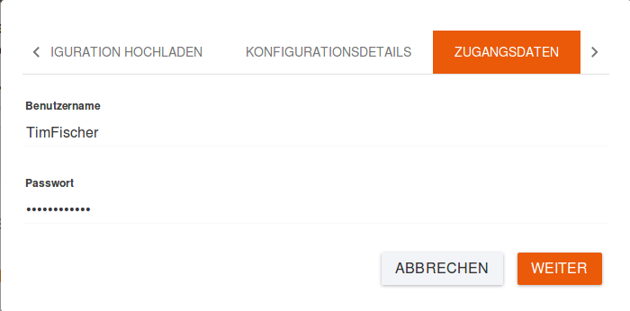
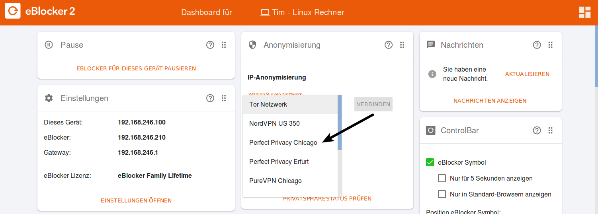

Deutsch | English
eBlocker Hilfe > Wissensdatenbank > Anwendungsmöglichkeiten
Anstelle des Tor-Netzwerks können Sie auch eine VPN-Verbindung über einen beliebigen VPN-Anbieter nutzen.
Achtung:
Durch die Nutzung der Services von VPN-Anbietern, können Ihnen zusätzliche Kosten entstehen. Die Verbindungsgeschwindigkeit kann ggf. vom VPN-Anbieter abhängig sein.
Eine VPN-Verbindung richten Sie in den eBlocker Einstellungen > Menü IP-Anonymisierung > Reiter „VPN-Netzwerke“ ein. Dort finden Sie auch einen Link zu einer Liste mit den von uns getesteten VPN-Anbietern. Wir erweitern die Liste ständig. Sie können auch andere VPN-Anbieter nutzen, solange diese Anbieter das OpenVPN-Protokoll unterstützen und die OpenVPN Dateien zum Herunterladen anbieten.
Von Ihrem VPN-Anbieter werden Ihnen ein Benutzernamen, ein Passwort und eine Konfigurationsdatei mit der Endung „.ovpn“ bereitgestellt. Diese Konfigurationsdatei ist nötig, um die Verbindung zum VPN-Netzwerk einzurichten.
Um eine VPN-Verbindung herzustellen, legen Sie zunächst einen neuen VPN-Anbieter an. Klicken Sie hierzu auf „Neuer VPN-Anbieter". Folgen Sie den Anweisungen des Assistenten und laden Sie die von Ihrem VPN-Anbieter bereitgestellte Konfigurationsdatei hoch.
Nach dem Hochladen der Konfigurationsdatei werden Ihnen einige Informationen angezeigt. Dabei handelt es sich zum Beispiel um ignorierte oder nicht unterstützte Optionen vom eBlocker, die in der Regel unbedenklich sind und zu keiner Funktionsstörung führen. Der eBlocker kann auch weiterhin optimal genutzt werden. Klicken Sie auf „Weiter".

Geben Sie unter „Zugangsdaten“ Benutzernamen und Passwort ein, die Sie von Ihrem VPN-Anbieter erhalten haben. Klicken Sie jetzt auf „Weiter".

Vergeben Sie anschließend für dieses VPN-Netzwerk Namen und Beschreibung und geben Sie das Land für das VPN-Netzwerk ein, aus dem Ihre IP-Adresse hervorgehen soll. Legen Sie abschließend fest, ob das VPN-Netzwerk in der Controlbar verfügbar sein soll und klicken Sie auf den Schiebeschalter. Soll die Verbindung nicht in der Controlbar angezeigt werden, wird sie in Ihren Einstellungen lediglich als inaktiv angezeigt.

Sie haben nun erfolgreich ein neues VPN-Netzwerk angelegt und können nun dieses mit einem Klick auf den Namen ggf. bearbeiten oder entfernen oder einen Verbindungstest ausführen.

Auf dem eBlocker Dashboard finden Sie eine "Anonymisierung" Karte. Sollte die Karte nicht sichtbar sein, so fügen Sie diese Karte bitte dem Dashboard hinzu.
Wählen Sie bei "Wählen Sie ein Netzwerk" Ihre angelegte VPN Verbindung aus und klicken Sie auf den Button "Verbinden".

Der eBlocker baut nun die Verbindung zum VPN Server auf und wird Ihnen die erfolgreiche Verbindung anzeigen. Die Verbindung zu dem VPN Server kann genau so einfach wieder Getrennt werden. Klicken Sie dazu auf den Link "Trennen" in der "Anonymisierung" Karte.
In der eBlocker Controlbar sehen Sie unter dem Menüpunkt „IP-Anon" auch das soeben angelegte VPN-Netzwerk. Um nun Ihren Rechner über einen bestimmten VPN-Dienst zu mit dem Internet zu verbinden reichen zwei Klicks in der Controlbar.

Nach Auswahl erscheint ein Statusfenster in dem sie den Verbindungsaufbau verfolgen können.
Nach Aktivierung des VPN-Netzwerks wird das Anon-Symbol zusätzlich in der Controlbar mit einem Karomuster ausgefüllt, um zu signalisieren, dass die Anon-Funktion aktiv ist.
Um die VPN-Verbindung wieder zu trennen, klicken Sie erst auf das IP-Anon Symbol und dann auf das VPN-Netzwerk. Das IP-Anon Symbol in der Controlbar zeigt wieder ein nicht ausgefülltes Karomuster an.
Achtung:
Eine Tor-Vorbindung kann nicht zeitgleich mit einer bestehenden VPN- oder einer anderen bestehenden Tor-Verbindung genutzt werden.
Beachten Sie bitte auch unsere FAQ.